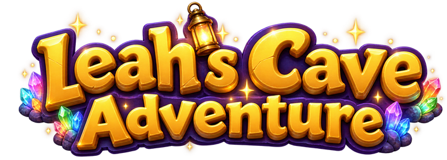
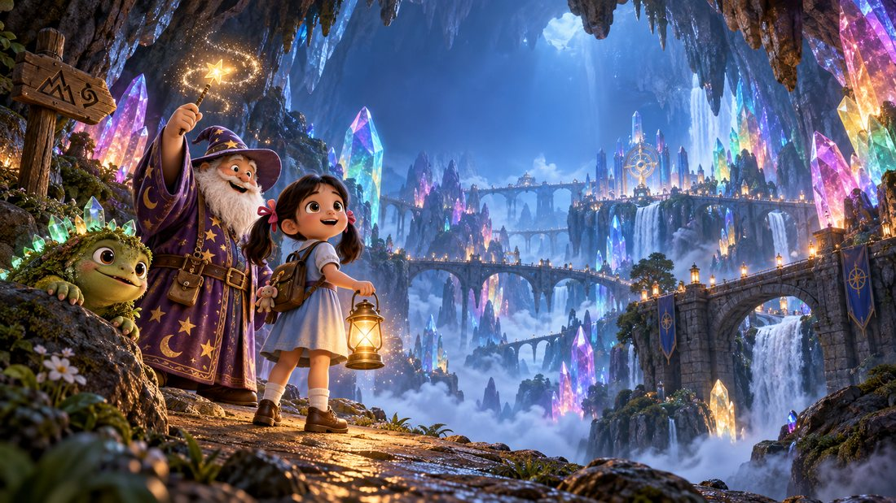

Help Leah collect 10 gems to make a Rainbow Heart for Mommy Pang! 🌈
🎯 Lv 1
💎0/10
⏰ --:--
📚 0/320 questions used

📱
หมุนจอเป็นแนวนอน
Rotate your device to play
🎮 Arrow Keys / WASD to move | 📱 Tap buttons or swipe on mobile 🔦 Leah only has a small lantern - she can only see what's near her! 📱✨ Call Daddy Phone to light up the WHOLE cave for 10 seconds! (2 min cooldown)
🌍 Choose your language
เลือกภาษา 🇹🇭
You can change this later by reloading | เปลี่ยนได้โดย refresh หน้า
🌟 Leah's Adventure 🌟

🧠 A Sparkly Gem!
Answer to collect this gem 💎
📖 สมุดสะสม
⚠️ The Cave is Shaking! ⚠️
🎉 LEAH MADE IT! 🎉
Watch the gems become a Rainbow Heart for Mommy Pang...